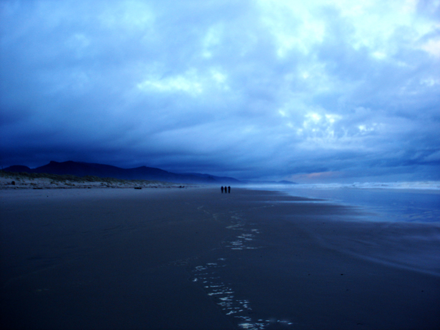
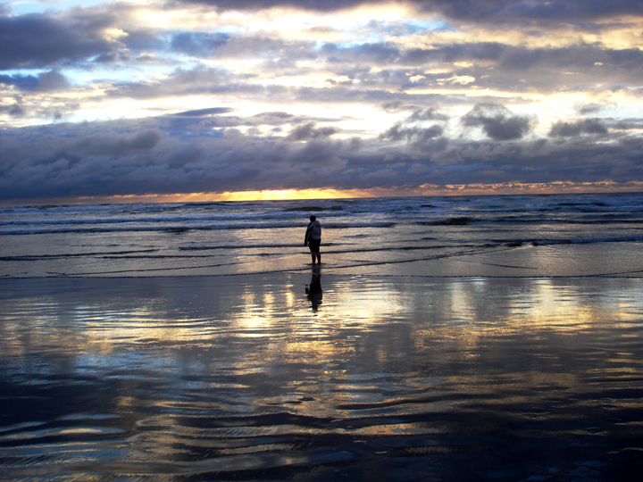
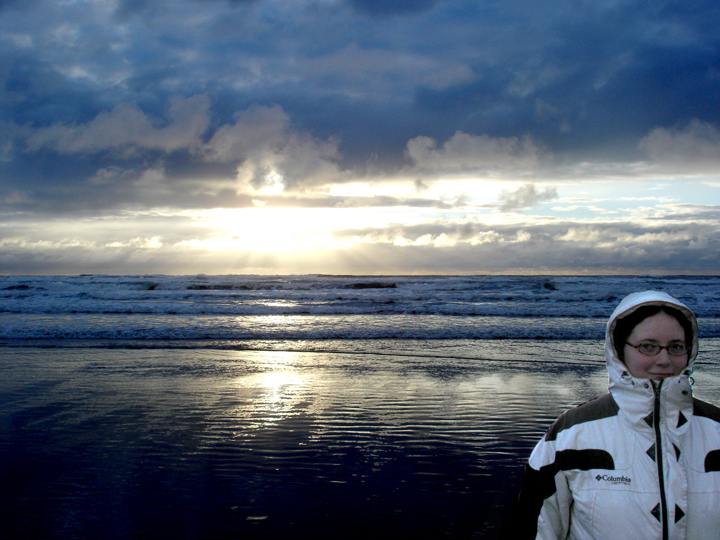
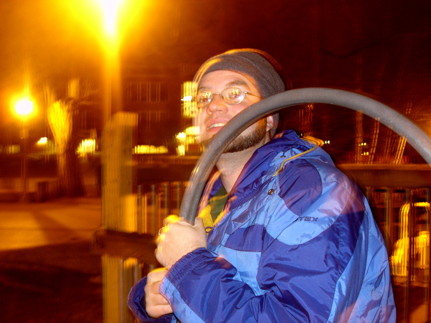
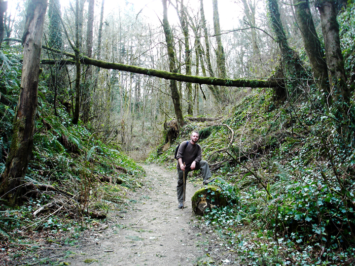
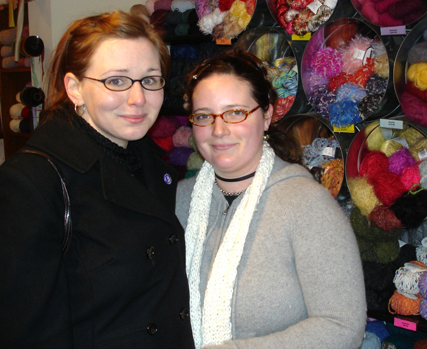

Nehalem Bay, Oregon coast.
April 8th, 2006 by ChandenguiHere are our favorite pictures from when we camped at Nehalem Bay on the Oregon coast:



Here are our favorite pictures from when we camped at Nehalem Bay on the Oregon coast:




Benjamin playing in a park

Benjamin in Forest ParkMaggie, our gracious host in Portland.

April and Maggie in front of a big rack of colored yarn. Maggie taught us to knit while we were there and April has already knitted a square pot holder!Here are a couple old journal entries that I wrote in my offline journal about a month ago. I wanted to share them with you guys:
2-28-06
Things move fast in times like this. We have one regret so far and it’s that we have so little time to write, reflect and post. Even our postcard correspondence and phone calls have dwindled in the hurried need to experience as much of the cold Northwest as we can.
My random observations are as follows: nice winter accessories, small butts, really good coffee everywhere, and fabulous public transit. Aside from getting to our campsite in Vancouver and finding the publicly-unknown soundgarden in Seattle, our car has almost been a nuissance. Though I shouldn’t speak ill of our home.
Portland was explained to us in detail by our own personal tour guide, my friend Maggie, who gave us the skinny on nearly everything, offering her home for 4 cold nights (so thankful, cause I mean COLD nights). We had the best dim sum I’ve ever had at ___ ____ in Portland and an amazing French breakfast at St. Honore. Maggie taught us how to knit and I’m half way done with a lovely red pot holder. (Knitting is not for the impationt or the busy). Then I’m making an asparagus green scarf that I probably won’t be able to wear until we get to New England this fall.
I should say something about the cold. At first (coming from TX and all) I was very un-used to the cold. I was bundled head to toe with sweaters, my big jacket, gloves, hat and both hoods… ridiculous. We’ve been at it now for some time and have already adjusted. By the time we got to Vancouver, we were able to put up tarps, tents, fire and food in the snow with a gusty wind, with relative patience and thoughtfulness. Now it’s still cold, but we’ve shed our jackets and our discomfort.
Seattle was cold and rainy which was fitting. I loved the Pike St. Public Market. If I were on my Normal Budget and going home to my normal kitchen, I would have gone berserk. We’re way over budget so we were conservative, but we still made a stellar meal: steamed brussel sprouts and carrots with butter, a mushroom white sauce with fresh cod over rice and sauteed spinach and tomatoes. Mmmmmm..
3-1-06
I feel like today was the breaking point with the cold. We layed in bed almost an hour longer than we had planned just ’cause we didn’t want to face the rain that had started up again (after letting up for a day and a night) and the cold wind. And tonight we decided to stay in the tent to read/write instead of making dinner and/or a fire in the gusty cold. It’ll be bitter sweet leaving Canada but I’m ready for the California sunshine.
Our budget has me jittery. And I know we have a lot of work to do designing a budget that works on $600/mo. Or we’ll have to dip deep into money we don’t really have. I didn’t realize how difficult the food part would be. Limited space and limited funds and a busy travel schedule can equal panic. I’m going to start looking into cheap healthy meals that can be cooked on a stove only, uses few pots/dishes, and can be easily stored. *sigh* Just don’t seem to have the time to research like I’d like. I suppose all of this is the challenge and I should be stepping up to it with a furrowed brow and a glint of pride.
I will say that though Vancouver has been an expensive detour, neither of us regret coming. It is by far my favorite stop so far.
I can’t say enough about our campsite. We go to sleep and wake up to the sound of waves. We rise in the morning to snow capped mountains jutting out of the ruffled sea. The beach is made up of round pebbles and stones and is littered with purple muscle shells. There are no buildings, houses or roads in sight. There are no people or trash or cars, just the land and the ocean and the mist.
Ok, I know it’s been a long time since we’ve posted anything. I feel bad about that, because I know people are checking back wanting to read something. I’m sorry. It’s partially because we’ve been on the road or camping, and it’s difficult to write or post from a tent. It’s partly because we’re at Lost Valley and I want to experience as much as I can of the community while I’m here. And partly, it’s out of laziness.
Here’s a rundown of what we’ve been up to over the past month.
Read the rest of this entry »
While we’re here at Lost Valley, we do not have cell phone coverage. So we’re not ignoring your calls, we just aren’t getting them.
Hey all. We had a wicked awesome time camping outside of Vancouver. Woke up the first day with our tent covered in snow. The weather improved from there. More to come. For now, here’s a short campfire message (13.6 MB, 39sec) for you.
The Lost Valley Education Center and intentional community was conceived on Earth Day 1989. Since then, Dianne Brause, co-founder, has been helping to guide its development. She spoke with us after a community lunch on February 16, 2006.